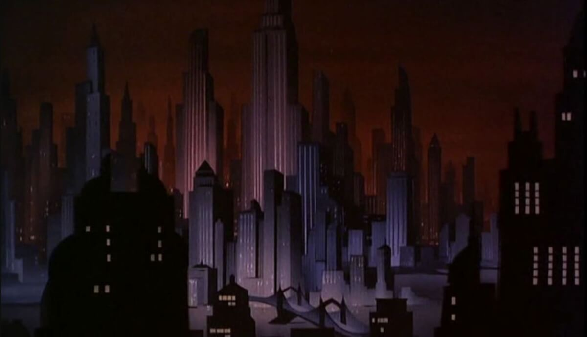
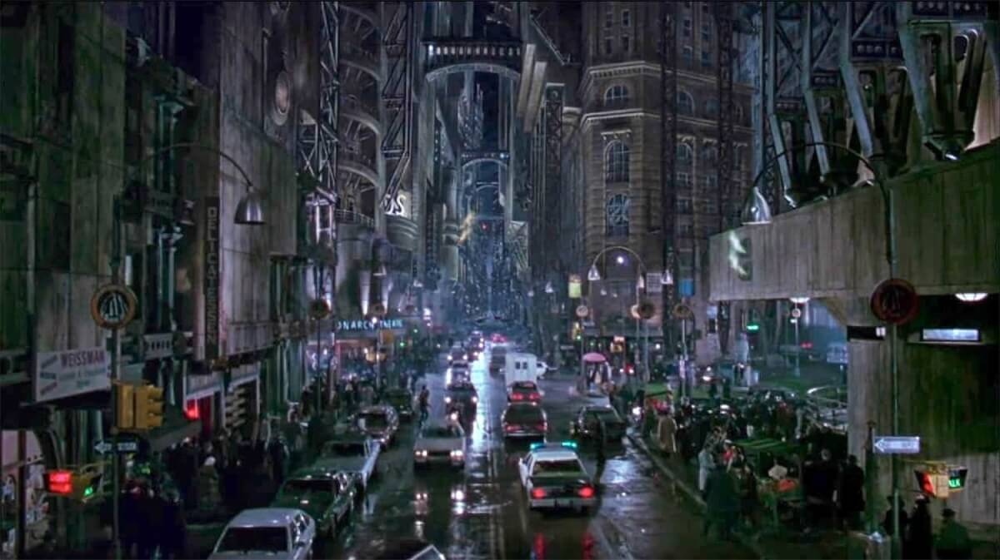
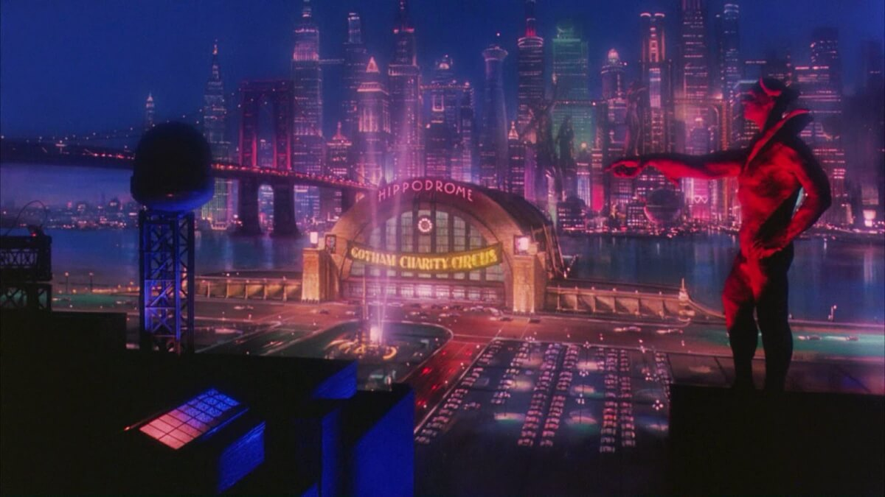
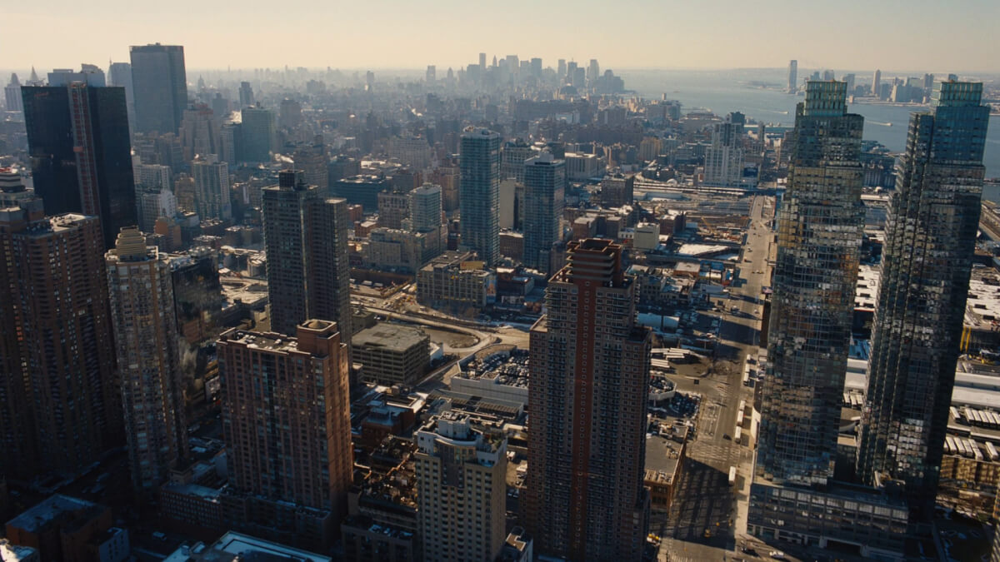
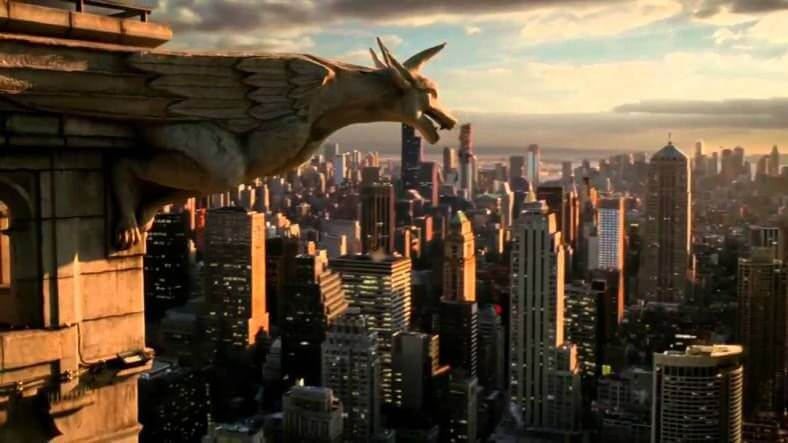

Son histoire
La genèse imaginaire de Gotham City se situe aux alentours de la fin du 19ème siècle où les
trois familles Cobblepot, Wayne et Elliot (les “Pères Fondateurs” de la ville) bâtirent les
trois ponts surnommés Portes de Gotham (voir l’arc narratif du même nom paru en 2011, scénarisé
par Scott Snyder) pour rejoindre l’île centrale, cœur de la ville.
Cependant, des origines bien plus occultes de Gotham City sont explorées par l’arc narratif de
Peter Milligan de 1990 dans Dark Knight, Dark City, qui révèle que certains de ces Pères
Fondateurs sont impliqués dans l’invocation d’un démon chauve-souris (sourire) vieux de 40 000
ans, lequel se retrouva piégé sous la Vieille Ville de Gotham, son influence sombre se répandant
alors que Gotham City se développait.
Le syndrome du cimetière indien… Stephen King lui-même ne renierait pas de telles origines
(attention au clown démoniaque) d’une cité à la limite de la malédiction.
Une cité qui avant même sa naissance attendrait le libérateur (ange ou démon) qui viendrait
combattre cette malédiction.
Plus d'information (Cliquez)
| Gotham sur les années | |||||||
|---|---|---|---|---|---|---|---|
| Adaptation |  |  |  |  |  | ||
| Images | Batman – The Antimated Serie. Une Gotham stylisée néo-gothique plutôt futuriste appelé le Dark Deco | La Gotham City de Tim Burton, reconnaissable entre toutes. Le plus pur style néo-gothique | Schmacher filme Gotham. Attention les yeux (et le cœur) | Gotham City vu par Nolan. Très inspirée par Chicago | Gotham Made by Zack Snyder. Dans la ligné de Nolan | ||